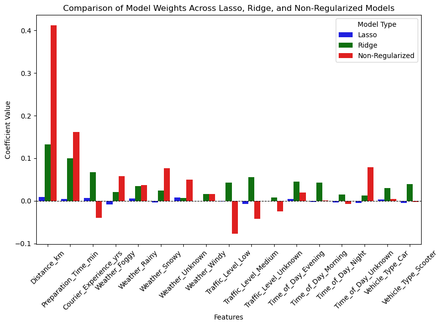

Gradient descent is an optimization algorithm used to minimize a function by iteratively moving in the direction of the steepest descent. There are three main types:
Regularization techniques like Lasso (L1) and Ridge (L2) help prevent overfitting by adding penalties to large coefficients:
Feature scaling ensures that all input features contribute equally to the model's learning process. Without scaling:
Standardization (zero mean, unit variance) or normalization (scaling between 0 and 1) significantly improves model performance by stabilizing weight updates.
The features that have almost zero values:
Task 1: Classification
Accuracy for three different values of k:
Accuracy for k = 1: 90.48 %
Accuracy for k = 5: 91.9 %
Accuracy for k = 10: 92.07 %
Accuracy when text embeddings are used:
Accuracy = 87.81 %
Task 1: Retrieval
Part A:
Mean Reciprocal Rank: 1.0Precision@100: 0.05Hit Rate: 1.0Part B: Image to Image Retrieval:
Mean Reciprocal Rank: 0.1935Precision@100: 0.018963Hit Rate: 0.9017Frequency of Samples in Each Bucket:

Problems I notice here:
I notice the problem that some buckets get a very large number of hyperplanes.
For Image to Image Retrieval:
Accuracy: 89.99000000000001 %Mean Reciprocal Rank: 0.8999Precision at k: 0.04656300000000001Hit Rate: 0.9619How do these metrics change, on changing the number of hyperplanes, mention possible reasons for these.
Increasing the Number of Hyperplanes
Accuracy increases because finer partitions reduce false positives. However, if too many hyperplanes are used, accuracy plateaus or slightly decreases due to over-segmentation.
Mean Reciprocal Rank improves as finer partitioning helps rank the correct results higher.
Precision at k improves since fewer irrelevant results are retrieved.
Hit Rate decreases because smaller hash buckets reduce recall, making relevant items less likely to be retrieved.
Decreasing the Number of Hyperplanes
Accuracy decreases because fewer partitions increase false positives.
Mean Reciprocal Rank decreases as incorrect items appear higher in rankings.
Precision at k decreases because more irrelevant results are retrieved.
Hit Rate increases as larger hash buckets improve recall, making relevant items more likely to be retrieved.
Reasons for These Changes
More Hyperplanes → Higher Precision, Lower Recall
More partitions create smaller hash buckets, reducing false positives but increasing false negatives.
Fewer Hyperplanes → Higher Recall, Lower Precision
Fewer partitions create larger hash buckets, increasing false positives but ensuring relevant items are included.

Statistics:
1): MRR = 0.9266, Precision@100 = 0.8354, Hit Rate = 0.9985, Avg Comparisons = 5329.182): MRR = 0.9337, Precision@100 = 0.8406, Hit Rate = 0.9991, Avg Comparisons = 10765.045): MRR = 0.9347, Precision@100 = 0.8412, Hit Rate = 0.9995, Avg Comparisons = 26092.3910): MRR = 0.9348, Precision@100 = 0.8411, Hit Rate = 0.9996, Avg Comparisons = 50000.00
Comparision of metrics: (both parts together)
IVF:
IVF (nprobe=1): MRR = 0.9266, Precision@100 = 0.8354, Hit Rate = 0.9985, Avg Comparisons = 5329.18
IVF (nprobe=2): MRR = 0.9337, Precision@100 = 0.8406, Hit Rate = 0.9991, Avg Comparisons = 10765.04
IVF (nprobe=5): MRR = 0.9347, Precision@100 = 0.8412, Hit Rate = 0.9995, Avg Comparisons = 26092.39
IVF (nprobe=10): MRR = 0.9348, Precision@100 = 0.8411, Hit Rate = 0.9996, Avg Comparisons = 50000.00
LSH: (for full train set at hyperplanes = 7)
Accuracy: 89.99000000000001 % Mean Reciprocal Rank: 0.8999 Precision at k: 0.04656300000000001 Hit Rate: 0.9619
Simple k-means
Mean Reciprocal Rank: 0.1935 Precision@100: 0.018963 Hit Rate: 0.9017
Own Implementation:
Decision Tree Test Accuracy: 0.8777817025785941
Scikit Learn:
Scikit-Learn Decision Test Accuracy: 0.8784881667255386
Best Parameters:
Max Depth: 10 / 11, Min elements: 3
Max Depth: 10, Min elements: 6

<img src = "segmented_image.png>

The previously computed clusters were used.
Without optimisation:
Iterations taken (frame_wise): [32, 29, 30, 29, 25, 33, 26, 30, 23, 39, 36] Average iterations: 30.181818181818183
With optimisation (2nd frame and onwards):
Iterations Taken: [18, 15, 9, 8, 12, 8, 12, 7, 16, 9]